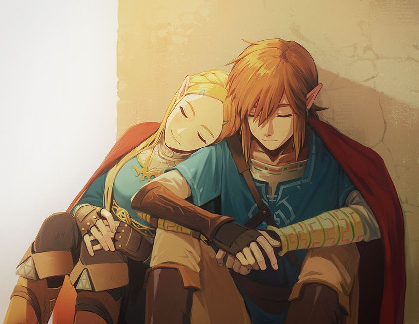

About Link:
Link is the main protagonist of The Legend of Zelda video game series. The character was first introduced in the original game released in 1986, and has since appeared in numerous sequels and spin-offs.The backstory and history of Link vary from game to game, but generally, he is depicted as a brave and noble hero who is tasked with saving the kingdom of Hyrule and rescuing Princess Zelda from various villains and monsters.In most games, Link is portrayed as a young boy or teenager who is chosen by destiny to wield the legendary Master Sword and protect the Triforce, a powerful artifact that grants its possessor great power and wisdom.Over the years, Link has undergone several different incarnations and variations, each with their own unique abilities, strengths, and weaknesses. Some of the most well-known versions of Link include the classic green-clad hero from the early games, the cel-shaded hero from The Wind Waker, and the Twilight Princess version of Link, which featured a darker, more realistic art style. Despite the variations in his appearance and backstory, Link is consistently portrayed as a courageous and selfless hero, willing to risk his life to protect the people he cares about and defeat the forces of evil threatening the land of Hyrule.
Courage in his heart, sword in his hand, and destiny on his side - Link, the hero of Hyrule.
Characteristics:
- Bravery: Link is always willing to put himself in harm's way to protect others and save the kingdom of Hyrule from danger.
- Resourcefulness: Link is a skilled adventurer who can navigate treacherous dungeons, solve puzzles, and use a variety of weapons and items to defeat his enemies.
- Kindness: Despite the dangers he faces, Link has a kind and gentle nature, and is always willing to help those in need.
- Humility: Despite his many heroic deeds, Link is humble and never seeks recognition or praise for his actions.
- Determination: Link is a determined and persistent hero, who never gives up on his quest to save Hyrule, even in the face of seemingly insurmountable obstacles.
- Silence: In many of the games, Link is portrayed as a silent protagonist, allowing players to project their own personalities and feelings onto the character. This also adds an air of mystery and intrigue to the character.
Friends:
They help him on his quest to save Hyrule. Click on the links below to know more about some of his most well-known companions: